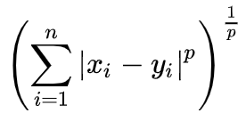
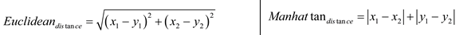
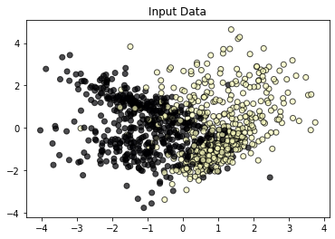
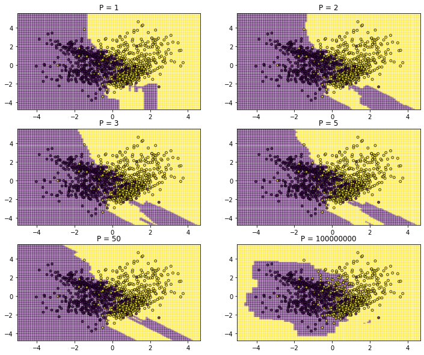
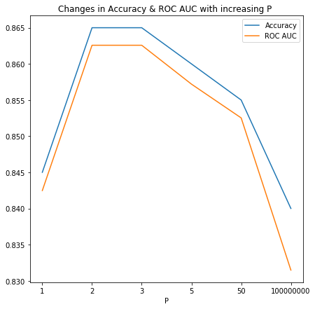

- Sun 05 January 2020
- Data Science
- Rittik Ghosh
- #Decision Boundry, #Classification
Minkowski distance is a generalized version of the distance calculations we are accustomed to. It can be defined as:


Euclidean & Manhattan distance:
Manhattan distances are the sum of absolute differences between the Cartesian coordinates of the points in question. Manhattan distances can be thought of as the sum of the sides of a right-angled triangle while Euclidean distances represent the hypotenuse of the triangle. Hence, Manhattan distances are usually larger than Euclidean distances. The name alludes to the path cars would take to travel between intersections in the higly grid like street layout on the island of Manhattan.
In the Minkowski equation above, when p=2, we get our familar Euclidian distance (also referred to as the L2-norm or L2 Distance). When p equals 1 we get the Manhattan distance. Manhattan distances can also find them selves called L1 norm, L1 distance, city-block distance and even LASSO. New York must really be the London of our times to even inspire geometry.
As p tends to infinity we get another famous distance, the Chebyshev distance. Manhattan, Euclidean, Chebyshev, and Minkowski distances are part of the scikit-learn DistanceMetric class and can be used to tune classifiers such as KNN or clustering alogorithms such as DBSCAN.
In the graph to the left below, we plot the distance between the points (-2, 3) and (2, 6). For regular euclidean distance, we expect the distance between the points to be 2, and we can see that in the graph that the value is 5 for p=2 but as p increases the distance tends to converge at 4.
We can also note that the distance computed can vary wildly based on the value of p and the coordinates of the points.
def minkowski(x1,x2,y1,y2,p):
t=(x2-x1)**p+(y2-y1)**p
return np.power(t,1/p)
def distances(x1,x2,y1,y2):
dist=[]
p=[]
for i in np.linspace(1,50,50):
dist.append(minkowski(x1,x2,y1,y2,i))
p.append(i)
return pd.DataFrame(zip(dist,p), columns=['distance','p'])
chart1=alt.Chart(distances(-2,2,3,6)).mark_line()
.encode(x='p',y=alt.Y('distance',scale=alt.Scale(domain=(0, 8),clamp=True)))
.properties(title="Distance between (-2,3) & (2,6)")
chart2=alt.Chart(distances(7,4,3,6)).mark_line()
.encode(x='p',y=alt.Y('distance',scale=alt.Scale(domain=(0, 8),clamp=True)))
.properties(title="Distance between (7,3) & (4,6)")
chart1 | chart2
The code below visually explores the different decision boundries formed by varying p in Minkowski distance. We also explore how our performance varies on the test set.
import matplotlib.pyplot as plt
import altair as alt
import pandas as pd
import numpy as np
from sklearn.neighbors import KNeighborsClassifier, DistanceMetric
from sklearn.model_selection import train_test_split
from sklearn.datasets import make_moons, make_circles, make_classification
from sklearn.metrics import accuracy_score, roc_auc_score
from sklearn.datasets import make_blobs
# Generate our data
X, y = make_classification(n_samples=1_000, n_features=2, n_redundant=0, n_informative=2, random_state=1
, n_clusters_per_class=2, n_classes=2)
plt.scatter(x= X[:,0],y=X[:,1], c=y, cmap='magma', alpha=0.7,edgecolors='k')
plt.title('Input Data');

X_train, X_test, y_train, y_test = train_test_split(X, y, test_size=0.2, random_state=117)
x_min, x_max = X[:, 0].min() - 1, X[:, 0].max() + 1
y_min, y_max = X[:, 1].min() - 1, X[:, 1].max() + 1
xx, yy = np.meshgrid(np.arange(x_min, x_max, 0.1), np.arange(y_min, y_max, 0.1))
np.c_[xx.ravel(), yy.ravel()]
def knn(k,p, X_train, y_train):
model = KNeighborsClassifier(n_neighbors=k, p=p, metric='minkowski', n_jobs=-1)
model.fit(X_train, y_train)
Z = model.predict(np.c_[xx.ravel(), yy.ravel()])
Z = Z.reshape(xx.shape)
return Z, accuracy_score(y_test, model.predict(X_test)), roc_auc_score(y_test, model.predict(X_test))
fig = plt.figure()
fig.set_figwidth(12)
fig.set_figheight(10)
distances=[1,2,3,5,50,100000000]
accuracy=[]
auc=[]
for i, val in enumerate(distances):
fig.add_subplot(3, 2, i+1)
Z,acc,roc = knn(5,val,X_train,y_train)
plt.pcolormesh(xx, yy, Z, cmap='viridis', alpha=0.35)
plt.scatter(X[:, 0], X[:, 1], c=y, cmap='viridis', edgecolor='k', s=15, alpha=0.7)
plt.title(f'P = {val}')
accuracy.append(acc)
auc.append(roc)

fig,ax=plt.subplots(figsize=(7,7))
ax.plot(accuracy)
ax.plot(auc)
ax.set_xticklabels(['0','1','2','3','5','50','100000000'])
ax.set_title("Changes in Accuracy & ROC AUC with increasing P ")
ax.set_xlabel('P')
ax.legend(['Accuracy','ROC AUC']);

We can observe stark changes to the shapes of the decision boundary and to performance as p varies. However these trends can not be generalized, and performance depends on the shape of the input data.